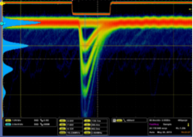

Theory¶
In this section the physical background of the phenomena related to SiPM signal generation are explained along with the algorithm used to describe them.
SiPM¶
SiPMs are state of the art light detectors with single photon sensitivity and photon counting capabilities.
A SiPM is composed by a dense matrix of Single Photon Avalanche Photo Diodes (SPADs) operated in Geiger-Muller mode. The impact of a photon on the single APD of the SiPM produces an electron - hole pair that, due to the intense electric field, triggers an avalanche of charge carriers that can be collected and measured.

Each single cell of the SiPM provides a binary information (hitted or not hitted). Since all APDs are almost identical they produce the same signal amplitude when a photon is detected, so by summing up the signals of each cell it is possible to reconstruct the total number of cells that have produced an avalanche. Thus the signal amplitude of the SiPM is expected to be proportional to the number of triggered cells and so to the number of impinging photons.
{kind=link}